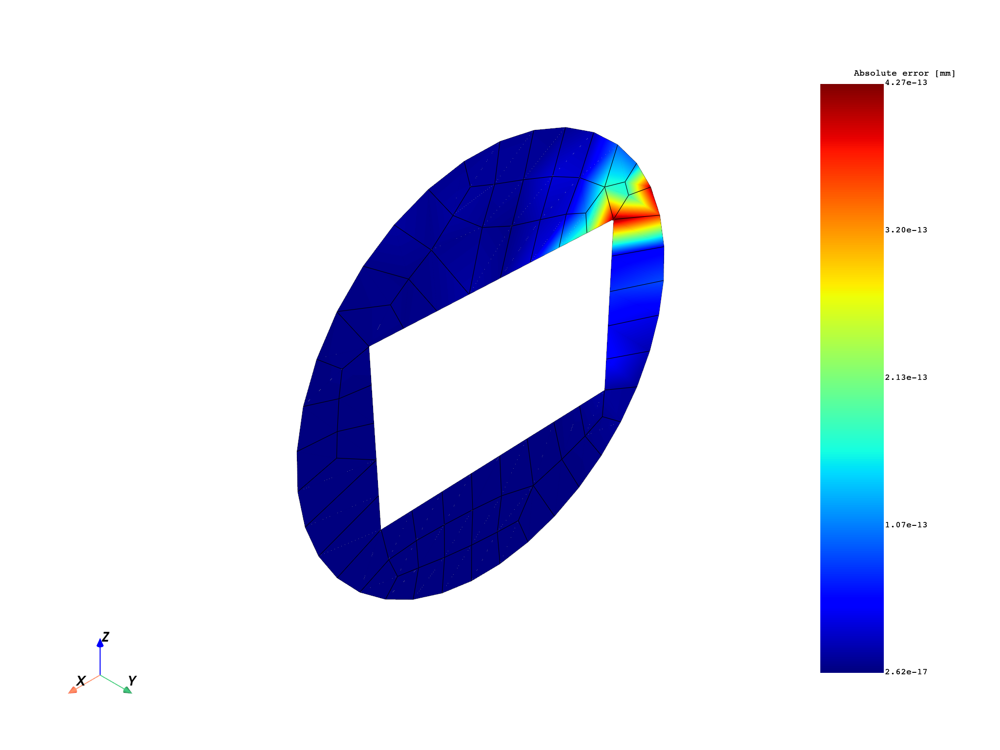
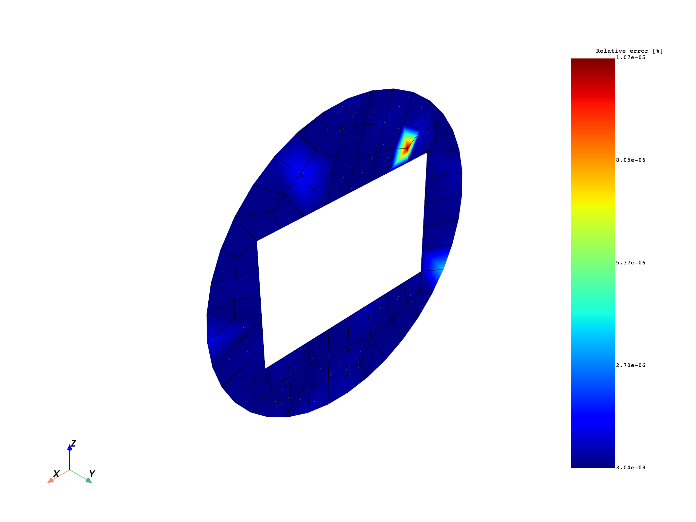

Note
Click here to download the full example code
Extrapolation method for strain result of a 2D element#
This example shows how to compute the stress nodal components from Gaussian points (integration points) for a 2D element using extrapolation.
Extrapolate results available at Gaussian or quadrature points to nodal points for a field or fields container. The available elements are:
Linear quadrangle
Parabolic quadrangle
Linear hexagonal
Quadratic hexagonal
Linear tetrahedral
Quadratic tetrahedral
Here are the steps for extrapolation:
Get the data source’s solution from the integration points. (This result file was generated with the Ansys Mechanical APDL (MAPDL) option
ERESX, NO).Use the extrapolation operator to compute the nodal elastic strain.
Get the result for nodal elastic strain from the data source. The analysis was computed by MAPDL.
Compare the result for nodal elastic strain from the data source and the nodal elastic strain computed by the extrapolation method.
from ansys.dpf import core as dpf
from ansys.dpf.core import examples
Get the data source’s analyse of integration points and data source’s analyse reference
datafile = examples.download_extrapolation_2d_result()
# integration points (Gaussian points)
data_integration_points = datafile["file_integrated"]
data_sources_integration_points = dpf.DataSources(data_integration_points)
# reference
dataSourceref = datafile["file_ref"]
data_sources_ref = dpf.DataSources(dataSourceref)
# get the mesh
model = dpf.Model(data_integration_points)
mesh = model.metadata.meshed_region
Extrapolate from integration points for elastic strain result#
This example uses the gauss_to_node_fc operator to compute nodal component
elastic strain results from the elastic strain at the integration points.
# Create elastic strain operator to get strain result of integration points
strainop = dpf.operators.result.elastic_strain()
strainop.inputs.data_sources.connect(data_sources_integration_points)
strain = strainop.outputs.fields_container()
Nodal elastic strain result of integration points:#
The command
ERESX,NOin MAPDL is used to copy directly the Gaussian (integration) points results to the nodes, instead of the results at nodes or elements (which are an interpolation of results at a few Gaussian points).The following plot shows the nodal values that are the averaged values of elastic strain at each node. The value shown at the node is the average of the elastic strains from the Gaussian points of each element that it belongs to.
# plot
strain_nodal_op = dpf.operators.averaging.elemental_nodal_to_nodal_fc()
strain_nodal_op.inputs.fields_container.connect(strain)
mesh.plot(strain_nodal_op.outputs.fields_container())

Create the gauss_to_node_fc operator and compute nodal component
elastic strain by applying the extrapolation method.
ex_strain = dpf.operators.averaging.gauss_to_node_fc()
# connect mesh
ex_strain.inputs.mesh.connect(mesh)
# connect fields container elastic strain
ex_strain.inputs.fields_container.connect(strain)
# get output
fex = ex_strain.outputs.fields_container()
Elastic strain result of reference Ansys Workbench#
# Strain from file dataSourceref
strainop_ref = dpf.operators.result.elastic_strain()
strainop_ref.inputs.data_sources.connect(data_sources_ref)
strain_ref = strainop_ref.outputs.fields_container()
Plot#
Show plots of extrapolation’s elastic strain result and reference’s elastic strain result
# extrapolation
fex_nodal_op = dpf.operators.averaging.elemental_nodal_to_nodal_fc()
fex_nodal_op.inputs.fields_container.connect(fex)
mesh.plot(fex_nodal_op.outputs.fields_container())
# reference
strain_ref_nodal_op = dpf.operators.averaging.elemental_nodal_to_nodal_fc()
strain_ref_nodal_op.inputs.fields_container.connect(strain_ref)
mesh.plot(strain_ref_nodal_op.outputs.fields_container())
Comparison#
Compare the elastic strain result computed by extrapolation and reference’s result.
Check if the two fields containers are identical.
The relative tolerance is set to 1e-14.
The smallest value that is to be considered during the comparison
step : all the abs(values) in the field less than 1e-2 are considered null.
# operator AreFieldsIdentical_fc
op = dpf.operators.logic.identical_fc()
op.inputs.fields_containerA.connect(fex_nodal_op)
op.inputs.fields_containerB.connect(strain_ref_nodal_op)
op.inputs.tolerance.connect(1.0e-14)
op.inputs.small_value.connect(0.01)
print(op.outputs.boolean())
True
Compute absolute and relative errors
abs_error_sqr = dpf.operators.math.sqr_fc()
abs_error = dpf.operators.math.sqrt_fc()
error = strain_ref_nodal_op - fex_nodal_op
abs_error_sqr.inputs.fields_container.connect(error)
abs_error.inputs.fields_container.connect(abs_error_sqr)
divide = dpf.operators.math.component_wise_divide()
divide.inputs.fieldA.connect(strain_ref_nodal_op - fex_nodal_op)
divide.inputs.fieldB.connect(strain_ref_nodal_op)
rel_error = dpf.operators.math.scale()
rel_error.inputs.field.connect(divide)
rel_error.inputs.ponderation.connect(1.0)
Plot absolute and relative errors.
The absolute value is the order of 1e-13, which is very small when compared to the
magnitude of 1e-5 of the displacements. This is reflected in the relative error
plot, where the errors are found to be below 1.1e-5%. The result of these plots
can be used to set the tolerances for the
identical_fc operator.
mesh.plot(abs_error.eval(), scalar_bar_args={"title": "Absolute error [mm]"})
mesh.plot(rel_error.eval(), scalar_bar_args={"title": "Relative error [%]"})
- 
- 
Total running time of the script: ( 0 minutes 10.975 seconds)